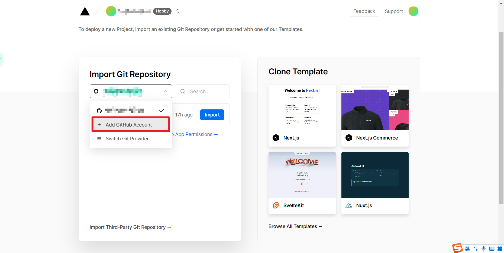
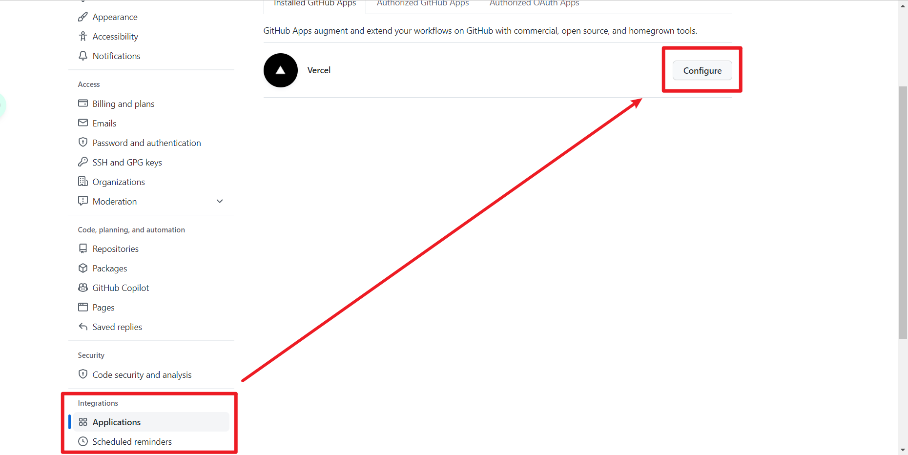
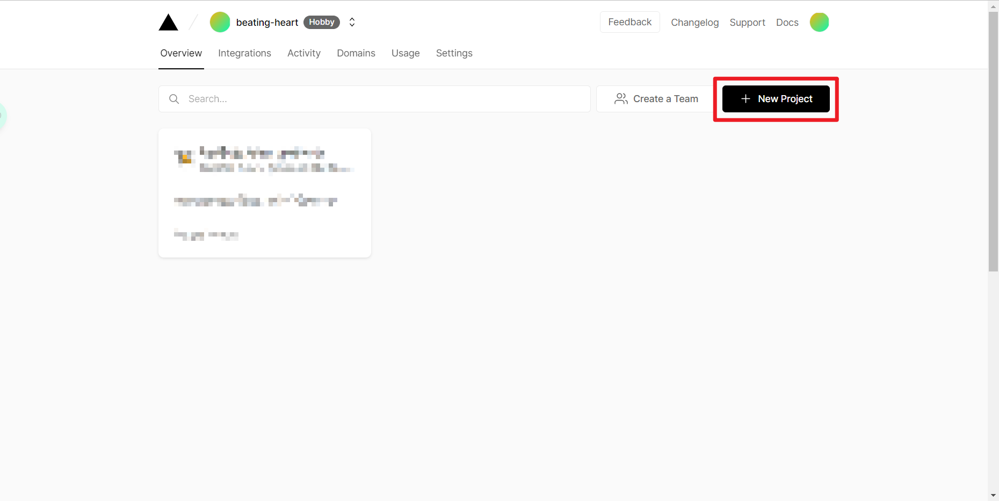
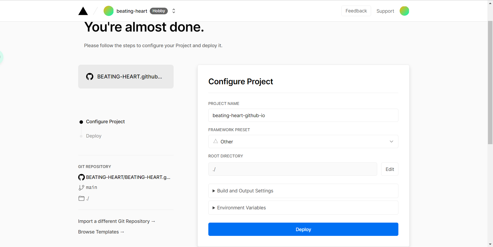
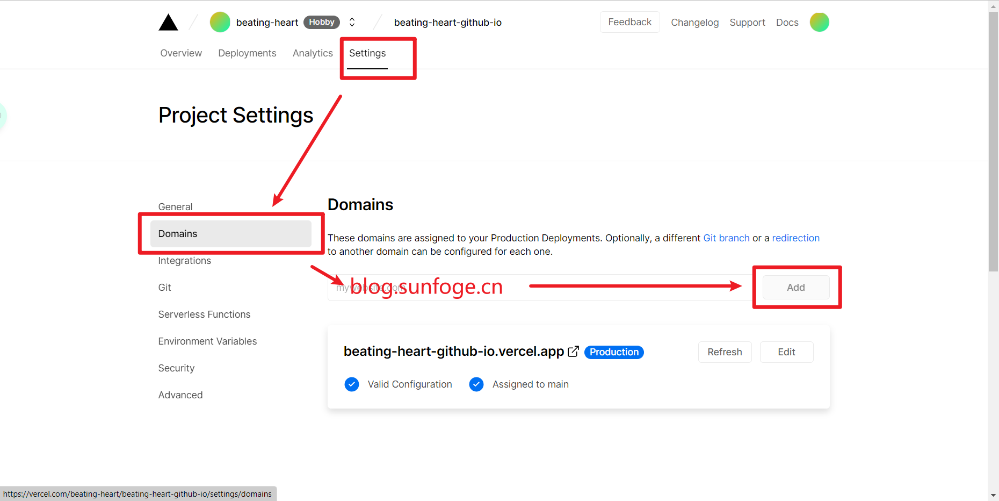
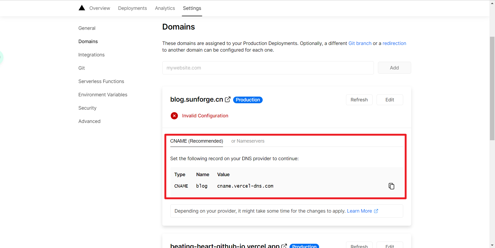

# 背景
用了一段时间的博客，发现百度并没有收录我的文章。尽管我已经配置了 hexo-baidu-url-submit 插件，也无效。
查询资料发现，Github 禁止了 baidu 爬虫访问 github.io 网页，配置 hexo-baidu-url-submit 插件无法解决这个问题。
于是开始寻找替代方法。
# 探索
网上有很多方法可以使百度爬虫爬取博客页面，总结起来主要有：
- CDN，利用云服务提供商将 blog 多做几个镜像。 CDN 比较贵
- 换托管平台，比如说国内的代码托管平台。
- 比如
gitee。但gitee需要开源审核，不想用gitee page了。 - 有些教程会说到
coding平台，目前coding平台并入腾讯云，如果使用静态网站托管服务，需要付费。
- 比如
- 自行使用 VPS 托管。VPS 大陆访问速度不快
# 解决方案：使用 vercel（zeit）托管
Guillermo Rauch 大神创业搞了一个静态站 hosting 服务 zeit.co ：
http://zeit.co 现在已经重定向到了 Develop. Preview. Ship. For the best frontend teams – Vercel
可以通过 GitHub 实现自动部署， vercel 提供 存储 + CDN + DNS 一套完整的服务，截至目前（2022-06）在中国大陆可以正常访问。
** 换而言之，不用 github page 了。** 而且 vercel 免费，可以白嫖。
进入首页，点击右上方的 sign up 按钮，进入登录界面
通过 Github 账号授权登录。
选择 Github 为 Git 源
添加 Github 账户。
vercel会作为github app被安装到Github账户上。

设置 vercel 对 github 仓库的访问权限
vercel网页会自动跳出设置界面- 也可以去
github官网上配置。
在 github 的账号 setting 界面（ https://github.com/settings/installations ），点击 applications ，设置 ``vercel` 的权限

往下拉，设置 permissions 和 repository access
经过授权，可以访问包括私有仓库在内的所有 github 仓库。此处我仅选择开放了部分仓库。
在控制面板中，点击 New Project 按钮，新建项目

选择新建项目，导入对应博客的仓库后，不做任何调整（保持 other 模板，root 设置为 ./ 即可），直接点击部署按钮，也就是 deploy 按钮。项目即完成部署。
注意：使用
vercel部署，可以完全替代github page的功能换言之，可以不使用
你的github用户名.github.io这个特殊仓库

项目完成部署后，按照下述步骤，可以配置自己的域名。

按照报错信息教程，做好域名配置即可

我的域名在阿里云，所以在阿里云的 DNS 解析上添加一条 CNAME 记录，即可使用自己的域名，正常显示博客。而且 vercel 也会自动签发 HTTPS 证书。
随后再向百度站长工具提交链接，就能保证内容被抓取。
# 参考文献
解决 github 屏蔽百度爬虫的问题 - 知乎 (zhihu.com)
使用 zeit.co 托管 hexo 静态博客 - 知乎 (zhihu.com)
如何让百度收录 GitHub Pages 个人博客 - 大数据 - 亿速云 (yisu.com)